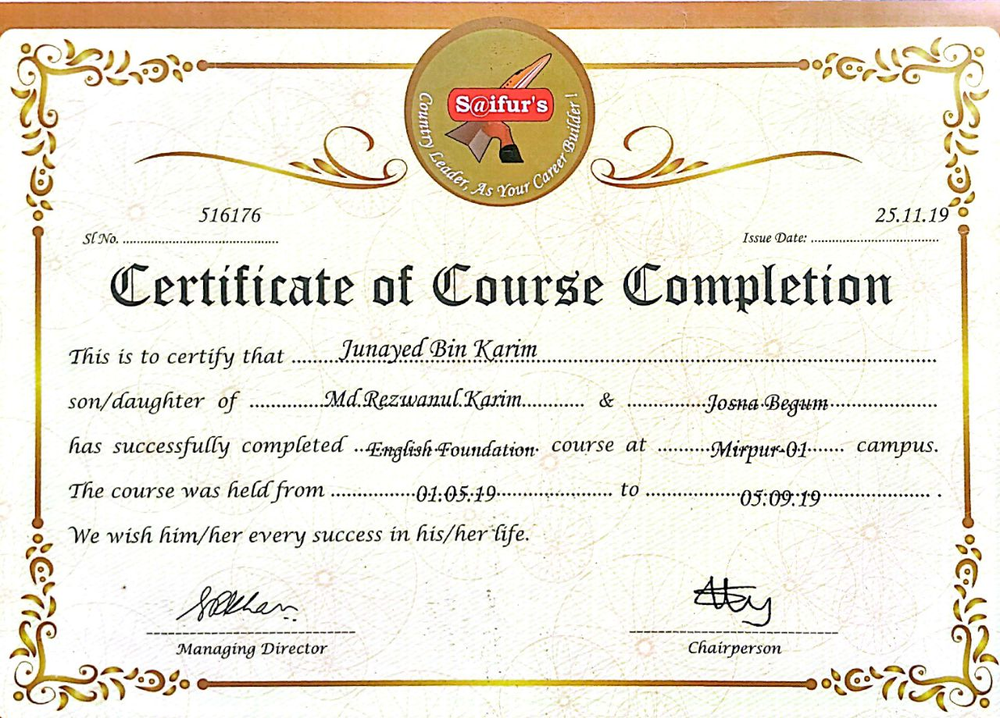

I'm Md. Junayed Bin Karim,
About Me
I am Md. Junayed Bin Karim, the Founder of Junayed Academy – a virtual learning platform helping students gain practical computer and tech skills for real job opportunities.
I work in web development, machine learning, and artificial intelligence (AI). My goal is not only to teach technology but also to build confidence and problem-solving skills among students.
In my spare time, I participate in community projects and enjoy teaching. I believe that collaboration and continuous learning are the keys to success.
Through Junayed Academy, my aim is to empower students in Bangladesh and beyond, improving their employability and driving positive societal change through technology.
Core Competencies
Web Development
Machine Learning
Green Computing
Cloud Computing
Database Management
IoT & Embedded Systems
Version Control (Git)
Cybersecurity Basics
Mobile App Development
Project Management
Artificial Intelligence
Programming Fundamentals
Work Experience
UI/UX Designer & Web Developer
Freelance | Remote
Jan 2023 – Present
- Designed and developed 10+ responsive websites using HTML, CSS, JavaScript, and Python.
- Improved user engagement by 30% through intuitive UI/UX redesigns.
- Collaborated with clients to translate business needs into functional web solutions.
Machine Learning Intern
Tech Solutions Ltd. | Dhaka, Bangladesh
Jun 2023 – Dec 2023
- Built and optimized CNN models for image classification with 92% accuracy.
- Automated data preprocessing pipelines, reducing manual effort by 40%.
- Researched energy-efficient algorithms for Green Computing applications.
Founder & Volunteer
Your 1 Taka = A Child’s Smile | Dinajpur, Bangladesh
Mar 2021 – Present
- Founded a donation initiative supporting 500+ underprivileged children.
- Organized 15+ community campaigns and fundraising events.
- Managed social media outreach, growing donor base by 200%.
My Projects

Smart Garden Irrigation System
IoT-based system that automatically waters plants based on real-time soil moisture data with Blynk app monitoring.
IoT
ESP8266
C++
Blynk


Recent Milestones
- Won 2nd prize in ML Seminar at DIU
- Reached 1,000+ students through online courses
- Your 1 Taka initiative helped 500+ children
- Developed and launched 6 full-stack web projects
- Completed multiple AI and ML certification courses
- Conducted 20+ workshops on programming and AI
- Collaborated with international tech communities
- Received recognition for contributions to social impact projects
Awards & Recognition



Recent Thoughts
Green Computing: Building a Sustainable Future
Discover how eco-friendly technology practices can reduce carbon footprints and e-waste...
Read MoreQuantum Cryptography: The Future of Secure Communication
Understand how quantum mechanics can revolutionize digital security and encryption...
Read More